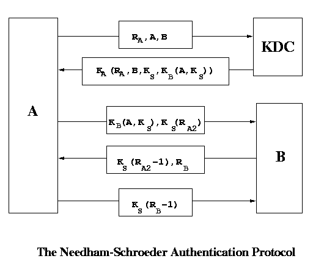
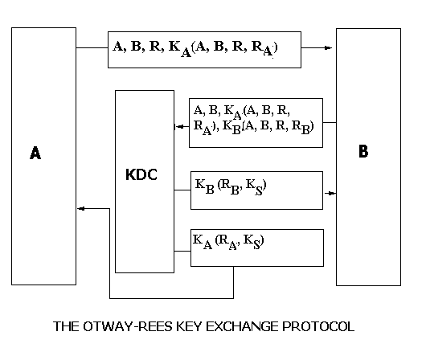

To prevent this, we can use:
In general, 2-way handshakes are always prone to attacks. So we now look at an another protocol.
This is like a bug-fix to the KDC scheme to eliminate replay attacks. A 3-way handshake (using nonce numbers) very similar to the ubiquitous TCP 3-way handshake is used between communicating parties. A sends a random number RA to KDC. KDC send back a ticket to A which has the common key to be used.

However, the problem with this scheme is that if somehow an intruder gets to know the key KS ( maybe a year later ), then he can replay the entire thing ( provided he had stored the packets ). One possible solution can be that the ticket contains a time stamp. We could also put a condition that A and B should change the key every month or so. To improve upon the protocol, B should also involve KDC for authentication. We look at one possible improvement here. which is a different protocol.

In real life all protocols will have time-stamps. This is because we cannot remember all random numbers generated in the past. We ignore packets with higher time stamps than some limit. So we only need to remember nonces for this limit. Looking at these protocols, we can say that designing of protocols is more of an art than science. If there is so much problem in agreeing on a key then should we not use the same key for a long time. The key can be manually typed using a telephone or sent through some other media.
Suppose nodes A and B have a shared key KAB which was somehow pre-decided between them. Can we have a secure communication between A and B ? We must have some kind of a three way handshake to avoid replay attack So, we need to have some interaction before we start sending the data. A challenges B by sending it a random number RA and expects an encrypted reply using the pre-decided key KAB. B then challenges A by sending it a random number RB and expects an encrypted reply using the pre-decided key KAB.
| A | B | |
| 1. | A, RA-------------> | |
| 2. | <--------KAB(RA), RB | |
| 3. | KAB(RB)----------> |
Unfortunately this scheme is so simple that this will not work. This
protocol works on the assumption that there is a unique connection between A and
B. If multiple connections are possible, then this protocol fails. In replay
attack, we could repeat the message KAB(M) if we can somehow convince
B that I am A. Here, a node C need not know the shared key to communicate
with B. To identify itself as A, C just needs to send KAB(RB1)
as the response to the challenge-value RB1 given by B in the first
connection. C can remarkably get this value through the second connection by
asking B itself to provide the response to its own challenge. Thus, C can verify
itself and start communicating freely with B.
Thus, replay of messages becomes possible using the second connection. Any
encryption desired, can be obtained by sending the value as RB2 in
the second connection, and obtaining its encrypted value from B itself.
|
Can we have a simple solution apart from time-stamp ? We could send KAB(RA,RB) in the second message instead of KAB(RA) and RA. It may help if we keep two different keys for different directions. So we share two keys one from A to B and the other from B to A. If we use only one key, then we could use different number spaces ( like even and odd) for the two directions. Then A would not be able to send RB. So basically we are trying to look at the traffic in two directions as two different traffics. This particular type of attack is called reflection attack.
| A | B | |
| 1. | A------------------> | |
| 2. | <-----------------RB | |
| 3. | KAB(RB)----------> | |
| 4. | RA----------------> | |
| 5. | <----------KAB(RA) |
Fig: 5-way handshake in Challenge-Response Protocol
However in this case also, if we have a node C in the middle, then C can pose
as B and talk to A. So C can do replay attack by sending messages which it had
stored some time ago !!